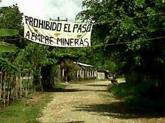
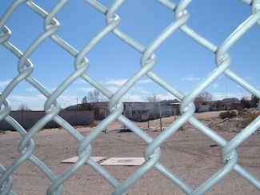

|
By Friendship Office of the Americas
On July 25, two international accompaniers from the Honduras Accompaniment Project, from Switzerland and France, were held captive for two and a half hours in the community of La Nueva Esperanza, Honduras, by armed men who guard the mining operations of Lenir Perez, the owner of Minerales Victoria. The armed men have been in this rural community in the department of Atlántida for almost two months, terrorizing the villagers and threatening those who refuse to sell their land to the miningcompany. The following day, 250 people marched to Nueva Esperanza to express support for the community's peaceful opposition to the mine and the role of international human rights accompaniers. Please take action now.
By Todd Miller, from Tom Dispatch
The first thing I did at theBorder Security Expoin Phoenix this March was climb the brown “explosion-resistant” tower, 30 feet high and 10 feet wide, directly in the center of the spacious room that holds this annual tradeshow. From a platform where, assumedly, a border guard would stand, you could take in the constellation of small booths offering the surveillance industry’s finest products, including a staggering multitude of ways to monitor, chase, capture, or even kill people, thanks to modernistic arrays of cameras and sensors, up-armored jeeps, the latest in guns, and even surveillanceballoons. Read more.
 By Emily Schmitz By Emily Schmitz
Dusk settles slowly, covering the soldiers in a soft purple light as they get in formation, lining up together side-by-side. Tomorrow they will leave the training base to begin their two-year military service. Juan Carlos waits anxiously outside the army base, gazing beyond the chaos of the newly recruited soldiers surrounding him. In black jeans and a loose-fitting t-shirt, he stands quietly apart from them; he is one of the few without military fatigues. Recruited in an illegal street round-up and held for 45 days without seeing his family, today he will finally go home. Read more.
By John Lindsay-Poland
US military interventions differ greatly from each other. Some, like the one currently contemplated in Syria or the invasions of Kosovo and Haiti, are publicly rationalized as humanitarian in purpose, while others, such as the long occupation of Afghanistan, are purportedly in self-defense, and still others supposedly fight drug trafficking, as in Colombia and Mexico. A constant among all such interventions is the stated belief of those propagating them that they will have a positive impact in the invaded nation. An antidote to such myths is the historical memory of the victims of wars where the United States has played a part. That is the starting point of Basta Ya! Colombia: Memories of War and Dignity. Read more.
By Jake Van Jenzen
A century of neglect, drug trafficking, and civil wars had made the “wild-east” Colombian department of Vichada a publicly designated “wasteland”. By the 1990’s, however, reduced hostilities allowed the government to open it up in specially regulated parcels for poor landless peasants. With Colombia as the second most unequal land distribution in the hemisphere, the redistribution scheme seemed to address the reasons that have sparked the civil war. Legislative measures specifically prohibit one person or entity from owning multiple agricultural family units in thisterritory. This didn’t hold back an alliance of the traditional oligarchy with transnational corporations such as Cargill. Through new and ongoing investigations, Cargill has been accused of an intentional scheme tosidestep laws and gobble up land parcels. Read more.
Uruguay moved toward becoming the first nation to fully regulate marijuana production, sale and consumption. Supporters of the bill say it will separate nonviolent marijuana use from organized crime, contributing to security. It is expect that Uruguay's senate will approve the bill and that it will be signed into law in September. Read an update by Geoffrey Ramsey and links to coverage in today's Pan-American Post. |